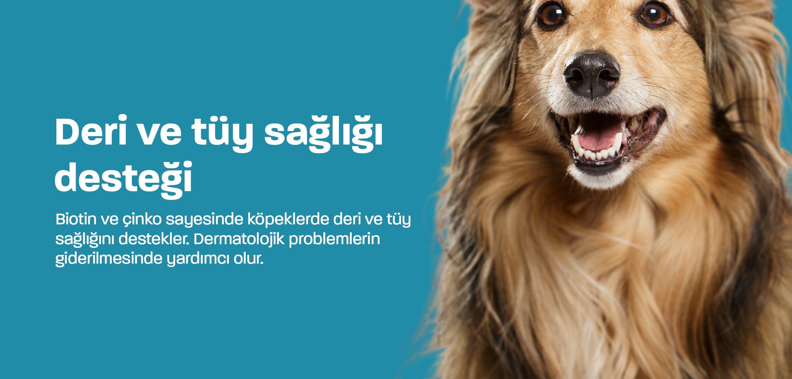
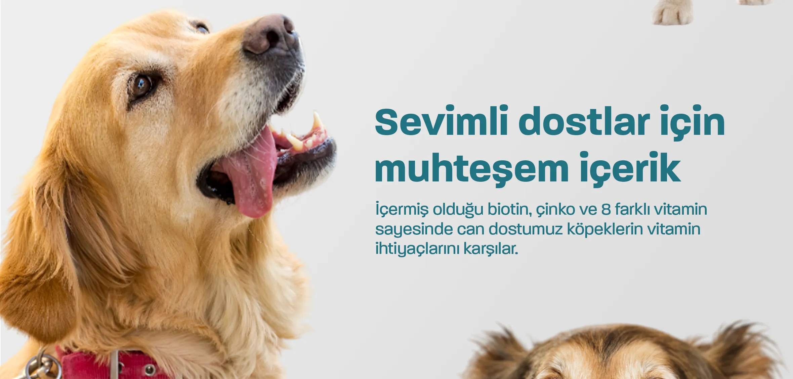
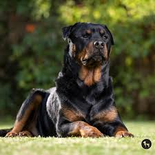
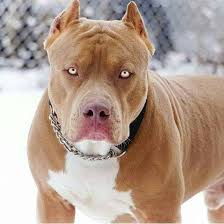
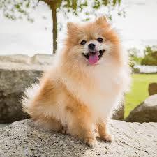
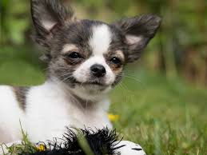
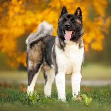

Doberman, ismini yaratıcısı Louis Dobermann'dan alan; asil duruşu, yüksek zekası ve ailesine olan sarsılmaz sadakatiyle bilinen çevik bir koruma köpeğidir.
.jpg)
Kangal, Sivas kökenli "Anadolu Aslanı" olarak bilinen, dünyanın en güçlü çene yapısına sahip ve sürüleri yırtıcılardan korumakla görevli, ailesine karşı aşırı korumacı ve sadık bir devdir.

Rottweiler, kökeni Roma İmparatorluğu'na dayanan, son derece güçlü ve korumacı bir iş köpeğidir; doğru eğitimle ailesine karşı çok uysal, sadık ve sakin bir karaktere bürünür.

Pitbull, aslında tek bir ırk değil, Terrier ve Bulldog karışımı bir grup köpektir; sanılanın aksine doğru sosyalleştirildiğinde "bakıcı köpek" lakabını alacak kadar çocuklara düşkün, atletik ve sevgi dolu bir dosttur.

Golden Retriever, dünyanın en popüler aile köpeklerinden biridir; son derece sevecen, çocuklarla harika anlaşan ve rehber köpeklik yapabilecek kadar zeki, uysal ve oyuncu bir dosttur.

Pomeranian, "Boo" olarak da bilinen, kabarık tüyleri ve tilki benzeri yüzüyle dikkat çeken, küçük cüssesine rağmen oldukça cesur, zeki ve enerji dolu bir kucak köpeğidir.

Pomeranian'dan bile daha küçük olan bu ırk, dünyanın en küçük köpek cinsidir; minik gövdesine rağmen devasa bir kişiliğe, büyük bir özgüvene ve sahibine karşı aşırı bir bağlılığa sahiptir.

Beagle, muazzam koku alma yeteneğiyle bilinen, sarkık kulaklı ve neşeli bir av köpeğidir; bitmek bilmeyen enerjisi ve oyuncu yapısıyla tam bir aile dostudur.

Alman Çoban Köpeği, yüksek zekası ve görev bilinciyle tanınan çok yönlü bir iş köpeğidir; sadakati, koruma içgüdüsü ve kolay eğitilebilir yapısıyla hem polis hem de aile dostu olarak rakipsizdir.

Border Collie, dünyanın en zeki köpek ırkı olarak kabul edilen, bitmek bilmeyen enerjisiyle tanınan ve koyun gütme konusundaki üstün yeteneğiyle büyüleyen, odaklanma ustası bir iş köpeğidir.

Sibirya Kurdu (Siberian Husky), buz mavisi gözleri ve kurt benzeri asil görünümüyle tanınan, soğuğa dayanıklı, son derece özgür ruhlu ve bitmek bilmeyen enerjisiyle konuşkan bir kızak köpeğidir.

Akita, Japonya kökenli, vakur ve sakin duruşuyla tanınan, sahibine olan efsanevi bağlılığı ve korumacı doğasıyla bilinen çok güçlü ve asil bir köpek ırkıdır.